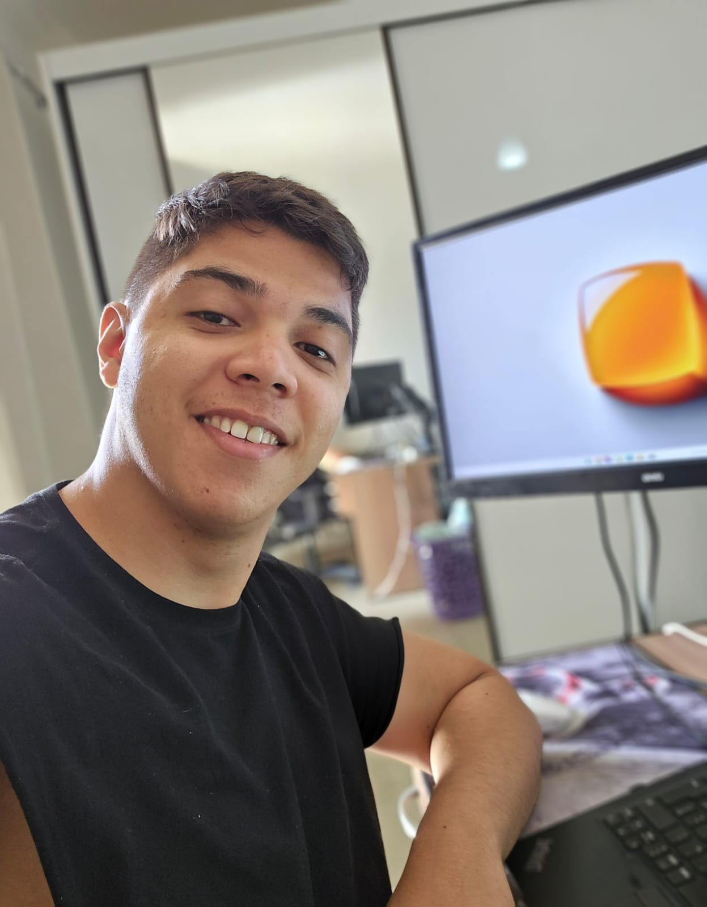

Gustavo Alves.
Implemento cultura de qualidade dentro de squads de tecnologia — da automação de testes regressivos e funcionais à disseminação da disciplina de testes na jornada de desenvolvimento. Hoje atuo no Itaú, na Comunidade de Custódia de Ativos PF.
Produtos de qualidade →02. Sobre mim
Atuo como Analista de Engenharia de TI no Itaú, na Comunidade de Custódia de Ativos PF, onde sou responsável por implementar e provocar conceitos de qualidade dentro dos squads — participando de refinamentos, inceptions e discovery, e agregando soluções com viés de qualidade e automação.
Meu foco é produtizar automação para testes regressivos, funcionais e integrados, disseminando a disciplina de testes na jornada dos desenvolvedores.
03. Minha abordagem
Qualidade construída em comunidade
Qualidade não é responsabilidade de uma pessoa ou etapa — é construída em comunidade. Realizo validações em camadas técnicas (Front-end, Back-end/API, nuvem e mensageria, banco de dados e infraestrutura), mas antes de validar o código, questiono a regra de negócio: testar algo que não faz sentido não gera qualidade real. Uso o Test Pyramid para equilibrar esforço entre os tipos de teste, e o Shift Left para antecipar essas discussões desde o início do ciclo.
04. Experiência
Analista de Engenharia de TI Jr.
Implemento e disseminado conceitos de qualidade dentro dos squads da Comunidade de Custódia de Ativos PF — participando de refinamentos, inceptions e discovery, e produtizando automação para testes regressivos, funcionais e integrados.
Analista de QA (PJ)
Qualidade de software ponta a ponta, com foco em automação de testes e melhoria contínua dos processos de teste.
Analista de QA (CLT)
Automação de testes Web, API, Mobile e banco de dados para projetos de clientes como Claro e Bradesco, atuando em times ágeis (Scrum/BDD) e cascata.
05. Produtos de qualidade
Pré-CAB
Realizo a mitigação de risco de mudança, com foco em qualidade de repositórios — validando testes de mutação, testes unitários, testes integrados e evidências de teste e plano de rollback antes da submissão ao CAB.
Farol
Monitoro e atualizo o Farol, suíte de testes regressivos que valida os serviços de pós-venda em ambiente de homologação.
Consultoria em testes de integração
Atuo como referência técnica para testes de integração através do TestStack, repositório que centraliza validações de serviços AWS, Redis, Kafka e API — orientando os desenvolvedores na construção e execução desses testes.
Pílula de Conhecimento
Disparo por e-mail, feito a cada sprint, que apresenta de forma leve e descontraída os produtos de qualidade do time.
06. Projetos anteriores
Claro — Salesforce (via Global Hitss)
Bradesco — Uras (via Global Hitss)
07. Skills
Linguagens
Automação Web / Mobile
API
Performance
Infra / Cloud
CI/CD & Ferramentas
Banco de Dados
Metodologias & IA
08. Contato
Vamos conversar?
Estou aberto a novas oportunidades — sinta-se à vontade para entrar em contato.